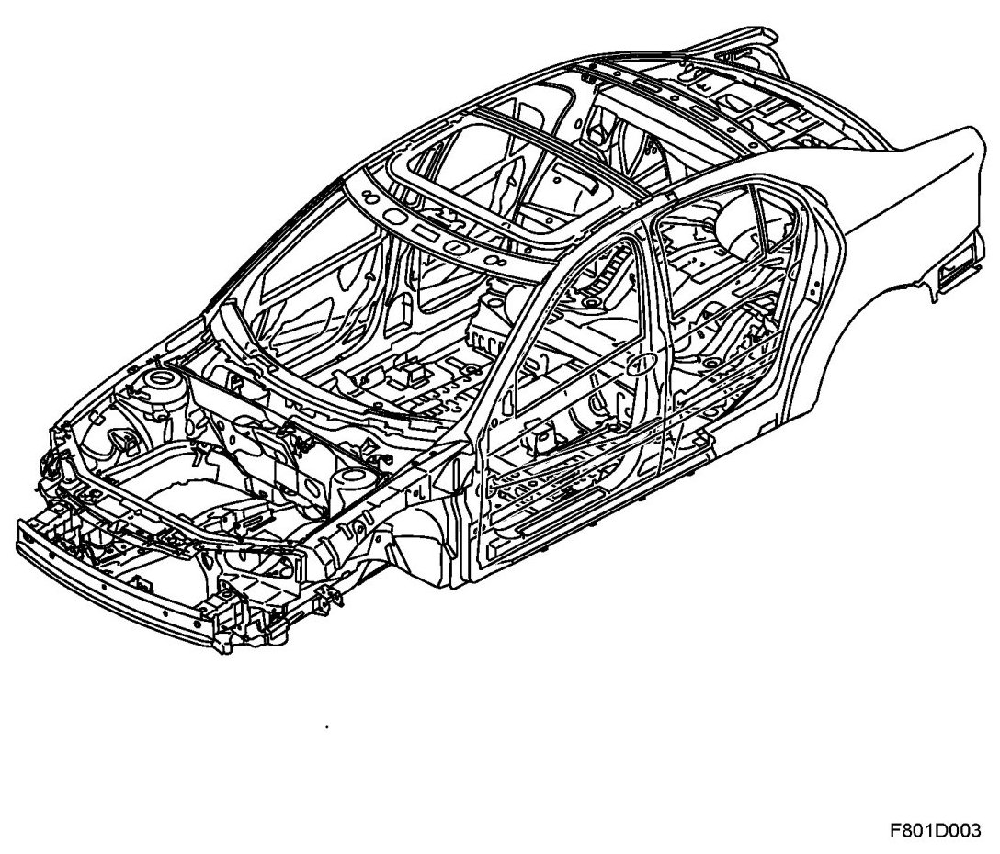
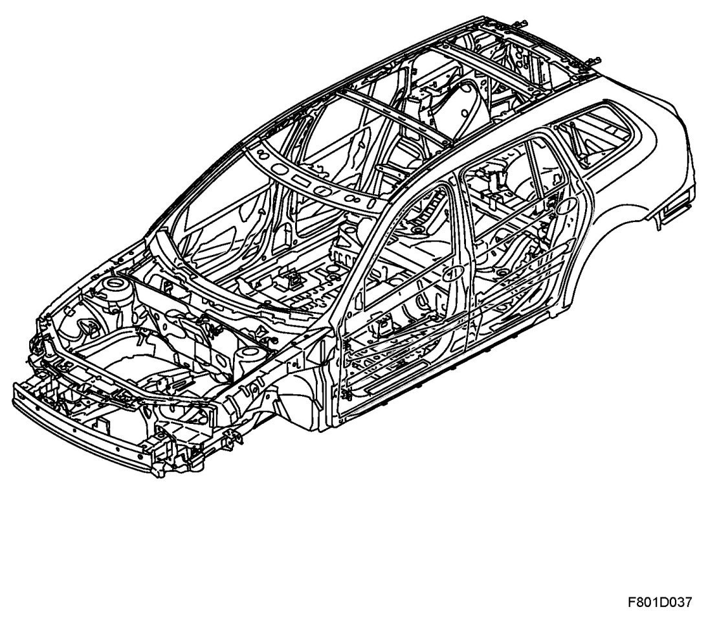
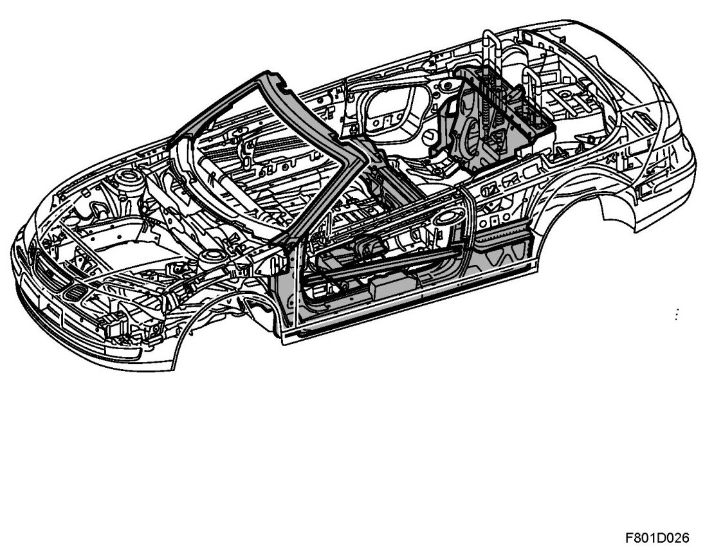

Body and Frame: Description and Operation: Overview
Brief Description
Overview
4D

5D

CV

Body design
Among the characteristic elements of the Saab 9-3 Sport Sedan's body are high torsional rigidity, a sturdy and stable cabin enclosure, generous front and rear deformation zones and very effective side impact protection.
Impact safety
The body of the Saab 9-3 Sport Sedan is constructed to create a survival zone for the driver and all passengers in the event of a collision. The large front deformation zones are designed to create a stable and robust deformation characteristics.
The B-pillar, which is stiff in the middle and slightly more flexible in the upper and lower sections, is most important component in the event of side-impact. This results in the B-pillar acting as a pendulum and distributing forces via the sill into the car.
The front doors have angled door members that direct the forces into the B-pillar and intensify the pendulum effect. Foam plastic spacers are also fitted inside the doors to stiffen them and prevent them from being forced into the cabin in the event of a side impact.
Reinforcements
The body is reinforced in the areas that are most exerted to strain during a collision. Some of this reinforcement is also manufactured in high-strength steel.
High-strength steel
Many of the reinforcements are made with high-strength steel (HSS) in order to make the passenger enclosure as stable as possible. Certain reinforcements are made with so-called ultra high-strength steel.
Galvanized body parts
The majority of the Saab 9-3 Sport Sedan's body is galvanised. Only a few of the inner body panels are not galvanised.
Sound insulation
Special foam sound insulation material has been used in addition to the sound absorbing panels that are fitted in the body. This material is located underneath the rear door windows, in the bootlid, in front of the rear wheel housings and in the A, B and C-pillars.